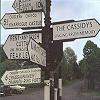

Celtic Lyrics Corner > Artists & Groups > The Cassidys > Singing From Memory > Óró Bog Liom Í
|  | Óró Bog Liom Í |
| Credits : | Traditional; arranged by Na Casaidigh |
| Appears On : | Singing From Memory |
| Language : | Gaeilge (Irish Gaelic) |
| Lyrics : | English Translation : |
| Curfá : | Chorus : |
| Óró bog liom í, bog liom í, bog liom í | Óró bog liom í, bog liom í, bog liom í |
| Óró bog liom í, cailin deas donn | Óró bog liom í, my brown-haired girl |
| Agus óró bog liom í, iompaigh is corraigh í | Agus óró bog liom í, touch her and move with her |
| 'S de réir mar a bhogfaidh sí tiocfaidh sí liom | Gently I'd move her 'til she came to me |
| Dá bhfaighinnse mo chailín i lúbín na scairte | If I had my love at the end of the garden |
| No i ngan fhios dá Daidí i ngáirdín na n-úll | Unknown to her daddy to the orchard we'd go |
| Thabharfainnse cogar di 'chuirfeadh a chodladh í | With just one whisper I would enchant her |
| Is de réir mar a bhogfadh sí thiocfadh sí liom | And gently I'd move her 'til she came to me |
| (Curfá) | (Chorus) |
| Dá bhfaighinnse mo chailín deas thíos cois an chladaidh | If I had my young love down by the seashore |
| No i ngan fhios dá Daidí i mo churrach ar tonn | Unknown to her daddy in a currach at sea |
| Thabharfainnse cogar di a chuirfeadh a chodladh í | With just one whisper I would enchant her |
| Is de réir mar a bhogfadh sí thiocfadh sí liom | And gently I'd move her 'til she came to me |
| (Curfá 3x) | (Chorus 3x) |